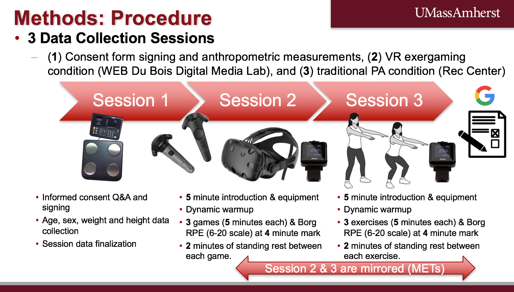
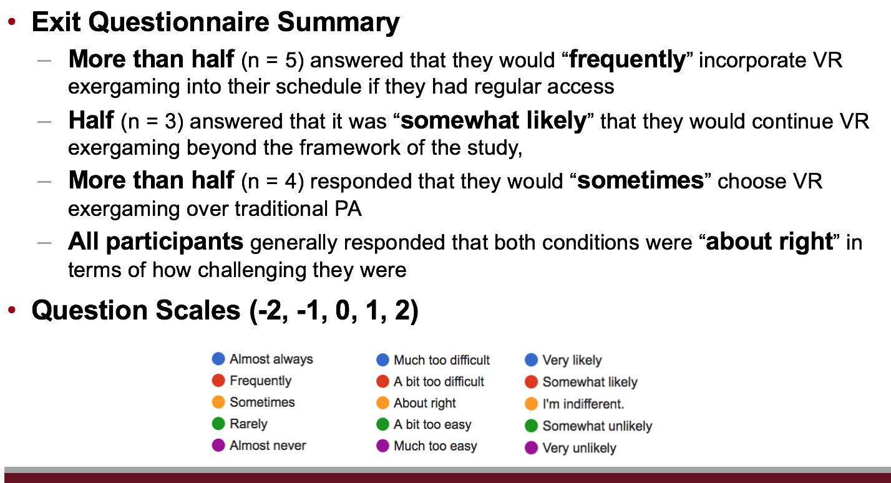
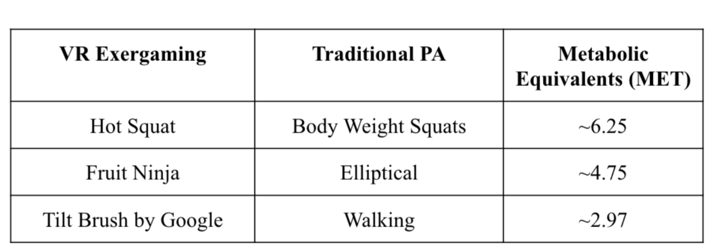
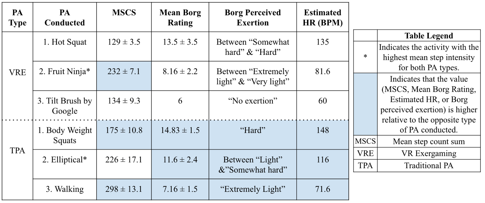
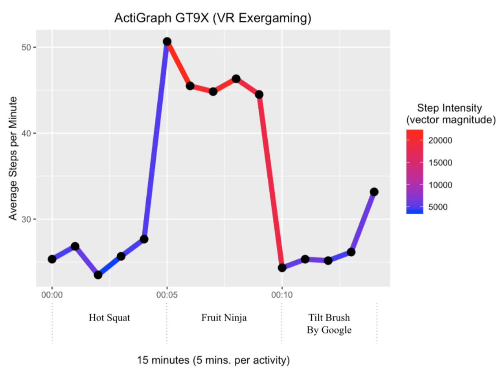
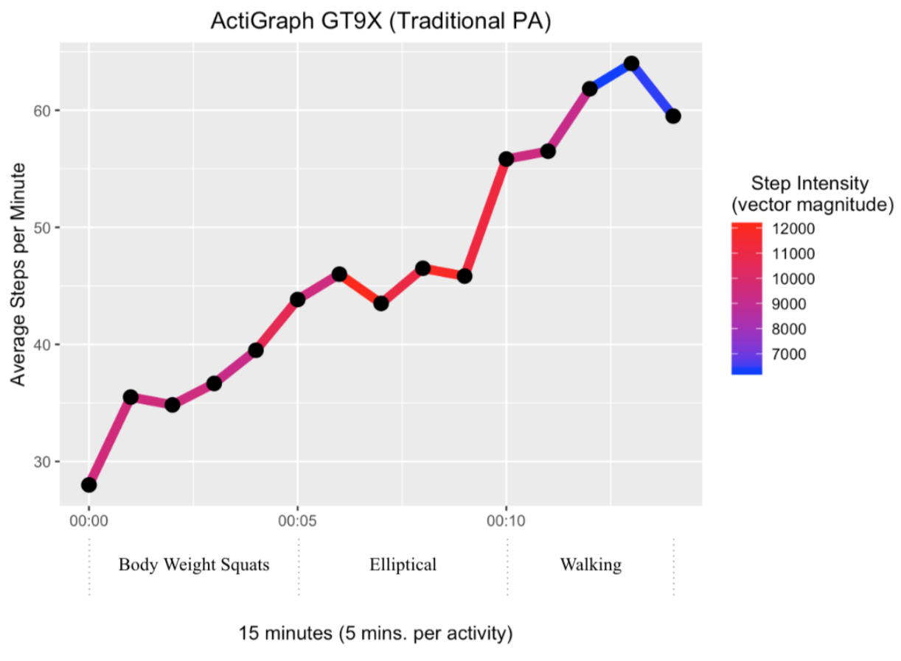
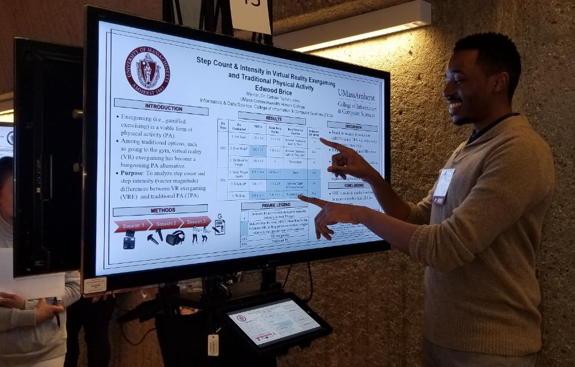
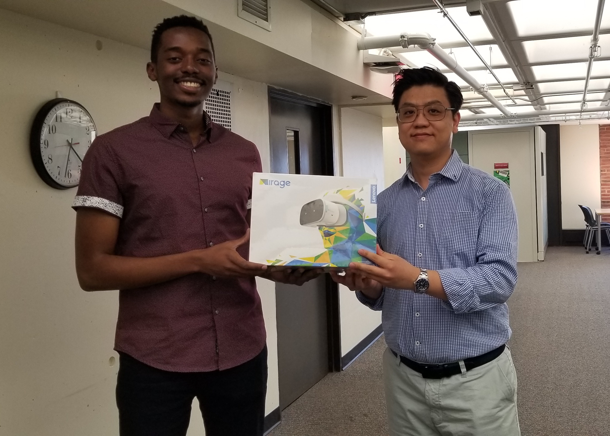

- TL;DR
- My Undergraduate Honors Thesis: “Step Count & Intensity In Virtual Reality Exergaming & Traditional Physical Activity”
- Physical Activity & You: Traditional Options
- Virtual Reality Exergaming & its Non-VR Counterparts
- Cited Research
- My Approach: Navigating the Literature & Finding My Own Path
- College Students & VR Exergaming
- Methods & Procedure: So what exactly did I do?
- Mirroring the VR Exergaming & Traditional PA Conditions
- My Results, Discussion, & Conclusions
- Sharing my Thesis with the UMass Community
- The Honor of Being Recognized
- What’s Next?
- References
TL;DR
Don’t have time to read the whole post? Don’t worry, I got you! Feel free to check out my short, award-winning videos that go over my honors thesis below:
#MyHonorsThesis (45 seconds): This video provides an overview of my thesis. It was submitted to the UMass Commonwealth Honors College (CHC) #MyHonorsThesis contest and was selected as one of the three winning entries. Entrants were required to describe their honors thesis in 45 seconds or less. It is now used as an example by the CHC to showcase the type of scholarship students can produce for their honors thesis!
VR Exergaming: The Virtual Side of Physical Activity (30 seconds): This video briefly shares my thesis conclusions and what I plan to do next. It was the winning entry for a contest held by the UMass WEB Du Bois Digital Media Lab. Entrants were asked to describe how they would enhance the UMass Amherst campus community through virtual reality. The grand prize was a Lenovo Mirage Solo VR headset!
My Undergraduate Honors Thesis: “Step Count & Intensity In Virtual Reality Exergaming & Traditional Physical Activity”
Buckle up! I have quite a bit to share. During my senior year at UMass Amherst, I had the opportunity to write an honors thesis manuscript titled, “Step Count And Intensity In Virtual Reality Exergaming And Traditional Physical Activity”. When I finally settled on this (admittedly long) title, I couldn’t believe it: I was doing something that freshman me had relentless qualms about. I recall knowing close to nothing about writing a thesis manuscript. Fortunately, I did not let that stop me.
Around that time, I had experience carrying out research but leading an independent investigation was definitely new to me. All I knew was that they took immense amounts of genuine effort and time. To be honest, the prospect of producing a thesis seemed overwhelming and it even scared me a little bit.
In retrospect however, I gradually realized over the course of my undergraduate career that fearing the unknown is normal. And if anything, it’s the things that scare us the most that are the most formative.
Although I wasn’t sure of what type of technology I wanted to use yet, I was confident that I would be able to find something. The world is increasingly weaving tech into daily activities and modern lifestyles. As a result, technology’s role in health will inevitably become more prominent.
Physical Activity & You: Traditional Options
We encounter PA daily. From standard house chores to carrying out gym routines, PA manifests on a diverse spectrum. Although it is generally known that PA confers health benefits however, figuring out what one should conduct is not always straightforward. Traditionally, people often have an intuitive sense of what they should do to be healthy. For example, things that usually occur in a gym e.g. weight lifting, scheduled classes, cardio, sports and etc. often come to mind. These options are the norm and their role in promoting health is indisputable.
But what about alternative PA options? For example, although going to the gym has worked for me, it may not be the best or most compelling option for my family and friends. As a result, I knew that one of my main goals for this thesis was to identify and investigate a form of PA that is viable when compared to the traditional option of going to a gym.
I soon realized that there are many established options beyond what you can find in a typical gym. After investigating and reflecting on what the people around me already do, I managed to settle on an alternative that was a clear winner: gamified exercise. It was something that most people I know are familiar with to some extent. Consequently, I found myself falling down a rabbit hole and entering the diverse world of exergaming i.e. gamified exercising.
Virtual Reality Exergaming & its Non-VR Counterparts
Exergaming, as a PA genre, is but one avenue of PA in a sea of alternatives that one can regularly incorporate in their schedule. It is often conducted with an assortment of virtual reality (VR) technology, video game controllers, and/or modified exercise equipment. It can be done in short bouts at the user’s convenience and the necessary components are widely available in numerous formats. For example, non-VR exergaming has famously manifested in highly-adopted household videogame platforms such as the Nintendo Wii (Wii Fit, Wii Sports, and etc.) and the relatively new Nintendo Switch (ARMS, the Just Dance series, Mario Tennis, and etc.).
Exergaming is a viable form of PA that is easier to conduct and may be more enjoyable than traditional PA for some people. And among traditional options, VR exergaming has become a burgeoning PA alternative. Through the means of PC computers and headsets, VR exergaming is capable of producing an unparalleled experience that is more immersive and compelling than its non-VR competitors. Standalone headset models that do not need PC computers such as the Oculus Quest and the Lenovo Mirage Solo VR, are representative of the next frontier in the VR industry. As they make their way into the market at price points that are similar to currently available video game platforms (e.g. PS4, Xbox One, Nintendo Switch, and etc.) VR exergaming has become more accessible than ever.
Cited Research
Research has demonstrated that exergaming that uses VR elements and modified exercise equipment is a viable means of reaching PA intensities recommended by public health authorities in college students (Siegel, Haddock, Dubois, and Wilkin, 2009). As an intervention tool, research has also shown that exergaming can promote PA adherence and improve chronic disease markers among young college-aged males over 6 weeks (Warburton et al., 2007).
Subsequently, VR exergaming is a beneficial option for not only video game enthusiasts and VR users but also laypeople who are increasingly exposed to it at home and in commercial settings.
College Students & VR Exergaming
With the help of six awesome UMass students who took time out of their busy schedules (!!!) to participate, I was able to carry out data collection sessions over the course of two months (February to March 2019).
The flexibility and health benefits conferred by VR exergaming are particularly relevant to this demographic and their highly structured lives. For them, PA often stems from activities that can be conducted in a typical gym. As I mentioned earlier however, PA is not an universal experience. Despite the desire to go one may not always have a local gym to attend. And if there is one, a lack of time, motivation, confidence or space at the gym can keep one from attending regularly. Frailty, an inability to walk comfortably, and countless other limitations can also prevent PA from taking place on a consistent basis in traditional contexts. In the light of this, VR exergaming has the potential to serve college students, fit their tight schedules, and adequately fulfill their PA needs.
Methods & Procedure: So what exactly did I do?
To help explain my workflow and show the devices I used for data collection, I pulled a slide right out of my final thesis defense.

I had 3 data collection sessions that were generally spread across 3 days for each participant. Besides consent form signatures, nothing was written down. All my data were either logged automatically with a wrist-worn device (ActiGraph GT9X - more on that later) or manually with Google Forms that I made specifically for this study.
- Session 1: Consent form signing and anthropometric measurements.
- Session 2: VR exergaming activities conducted at the UMass WEB Du Bois Digitial Media Lab.
- Session 3: Traditional PA exercises carried out at the UMass Rec Center.
Session 1 was very straightforward. I recorded the height, weight, age, and sex of the 3 men and 3 women who volunteered. I also went over my study’s procedure and consent form.
For Session 2, I brought my participants to the WEB Du Bois Digital Media Lab. After a short introduction and a dynamic warm-up, they were equipped with a wrist-worn ActiGraph GT9X: a research-grade pedometer and accelerometer that automatically collected step count and step intensity data.
Additionally, participants were hooked up with a HTC Vive VR headset and given two handheld controllers. Afterwards, we played 3 VR exergaming games for 5 minutes each for a total of 15 minutes of PA.
The games were:
- Hot Squat: Participants were required to perform body weight squats to fit into shapes cut into moving platforms.
- Fruit Ninja: In Fruit Ninja, participants wielded swords in both hands to cut as many flying fruit as possible.
- Tilt Brush by Google: With Tilt Brush, participants created artwork in a 3D space using a plethora of brushes and tools.
As I mentioned earlier, the Borg Rating of Perceived Exertion (Borg RPE) scale was used to capture perceptions of PA. The lowest value is a 6 (“no exertion”) and the highest is a 20 ("maximal exertion). A Borg RPE rating can also be interpreted as an estimation of heart rate (HR) in beats per minute (BPM) when multiplied by 10. At the 4 minute mark of each game, I asked each participant for their Borg RPE rating.
For Session 3, I brought my participants to the UMass Rec Center. They did the same thing they did in Session 2 except traditional physical exercises were conducted.
The exercises were:
- Body weight squats
- 5 minutes on an elliptical
- 5 minutes walking around a standard indoor track
At the end of Session 3, I administered an exit questionnaire Google Form to collect subjective insight. I pulled another slide from my thesis defense to summarize the results of that survey:

Mirroring the VR Exergaming & Traditional PA Conditions
In order to elicit meaningful objective and subjective insight and differences from the tested PA conditions, metabolic equivalent (MET) values were used. METs are objective values that measure PA energy expenditure. One MET is derived from the amount of energy that an individual expends when they are sitting quietly (Ainsworth, Cahalin, Buman and Ross, 2015).
Each activity (in both conditions) was mirrored by an activity that was most similar to it in terms of METs in the opposite condition. The table and the short clip below shows how that was done.
My Results, Discussion, & Conclusions
Around the last week of March 2019, I was finally finished with data collection and ready to move onto data analysis. 🙌🏽
I primarily used RStudio to clean and make sense of the data I collected. After doing that, I came away with the following insight:
- Based on mean step count sum (MSCS), mean Borg rating, Borg RPE, and estimated heart rate, traditional physical activity was objectively more intense than VR exergaming. All of these values were recorded in the table below: The MSCS (rounded to the nearest step) was composed of the average steps recorded each minute over the course of the respective conditions (VR exergaming & traditional PA).

- As I mentioned earlier, each game/exercise in both conditions (3 per condition) were conducted for 5 minutes each, for a total of 15 minutes of PA. To visualize the data captured by the ActiGraph GT9X during this period in both conditions, plots were produced to track PA by the minute. The plots were essentially PA timelines that showcased what was going on. Each minute consists of the average step count and average step intensity conducted in that minute.


- Lastly, per the exit questionnaire, VR exergaming was still an appealing option for my participants despite the presence of traditional PA options e.g. regimented gym sessions, cardio, sports, dancing, and etc. Doing it however, was a matter of access. Despite the fact that my participants enjoyed it, VR exergaming is not accessible to most people. Yet. Fortunately, I definitely see that changing in the near future.
Ultimately, the fact that VR exergaming is less intense than traditional PA was not surprising. As a form of PA however, this is actually a boon. Since it was easier to conduct, engaging, and more immersive than traditional PA, my participants had boatloads of fun. Consequently, the fun they had balanced the lack of intensity because they were more willing to do it (if they had access to it).
This was the grand takeaway. If you remember anything from this post, I hope it’s this part! At this point in time (late April) I had completed:
- A full-grown honors thesis manuscript! After several drafts (and late nights!), I wrapped it up at 88 pages. 🎉
- A 10 minute final thesis defense before my seminar peers and Dr. Tudor-Locke. This was the first presentation in what became 5 total!
Sharing my Thesis with the UMass Community
Now that my thesis was officially finished and approved for submission, all that was left was to share it as much as I could!
UMass Rase (April 25th): The 2019 UMass Research Art Science Exhibition (RASE) event was genuinely an amazing experience. To participate, I produced artwork that was based on my thesis. Afterwards, it was printed and hung up in a pop-up gallery in the WEB Du Bois Library.

Switching gears from the prospective of a manuscript to art was definitely something that I had never thought of doing before. I am so grateful that my work was selected and that I had the opportunity to showcase my thesis in this manner! This was presentation 2/5!

To see the event in action and other works that were presented, check out this short video published by the UMass Digital Media Lab:
The Physical Activity Arena (April 25th): To prepare for the onslaught of thesis presentations, I took a public speaking course. For our final presentation, I elected to present my thesis with a spin. Subsequently, after a quick introduction of what my thesis was about I transformed the space into “The Physical Activity Arena”!
In the arena (aka the space in the center of the room), I had volunteers do some of the PA that my thesis made use of. This included a dynamic warm-up and their choice of traditional PA. Since the room was not able to accomodate VR exergaming, I made use of simulated exergaming through the means of a clip from the Just Dance video game.
Once my volunteers picked a song, we all did our best to follow Shakira’s moves from her iconic song, “Hips Don’t Lie”! The primary purpose of presenting my thesis in this manner was to emulate the experiences that my participants took part in during data collection. This presentation was my third one! 3/5!
Mass URC (April 28th):
The Massachusetts Undergraduate Research Conference is an annual event where students all over the state come to present their research in a variety of formats. I presented my thesis poster style on an ePoster. An “ePoster” is a television with a mounted computer. It enabled presenters to share moving media and multiple slides at a time.
This experience was a whirlwind of fun. Before I knew it, my allotted time was up. I shared my work with countless students, faculty members, and peers. Everyone was tuned into what I had to say. People even commented that my work was relevant to their own PA journeys. Being able to spark interest and galvanize participation in VR exergaming truly meant a lot to me. This was presentation 4/5!

Data Science Symposium (April 24th) & UMass VR/AR Working Group (May 7th): The Data Science Symposium was an event where stakeholders in the data science industry came together to present their cutting-edge research across a variety of domains.
I had the great pleasure of sitting in on several talks that went over data science’s role in society and how it will impact the world in the coming years. I also went to a VR/Augumened Reality (AR) oriented research workshop and met a handful of industry leaders.
That experience culminated in my participation in UMass VR/AR Working Group. The group meets to foster VR/AR development and discussion throughout Massachusetts. During the final meeting of the year, I represented the UMass Digital Lab and presented my thesis to a group of members from the UMass community.
This was my final presentation! 5/5!
The Honor of Being Recognized
Over the past 8 months, my work has garnered recognition from all over the UMass community!
#MyHonorsThesis: In November 2018, I entered the #MyHonorsThesis contest. After a couple weeks, I found out that I was a winner! Since then, my video has been shared and showcased several times. There have been times where students meet me and they mention that they saw my video in their class or in CHC advising. When I made that video I never thought it would get as far as it did. In retrospect, I’m extremely proud of its impact.
Honors Dean’s Award: The Honors Dean’s Award is given to students who demonstrate excellence through the means of their thesis. When I found out that I got the award, I was estatic! Thank you for your recommendation letter, Dr. Tudor-Locke!
College of Information and Computer Sciences Senior Senior Celebration (CICS) (May 11th): The CICS Senior Celebration will always be an event that I will cherish. It was the final ceremony in a series of three total graduation ceremonies (more on my graduation ceremonies in a future post!). When introducing us to our family, friends, and peers, CICS Dean Laura Haas took a moment to highlight the accomplishments of the Class of 2019. Among them was my honors thesis! Hearing my friends and family root for me as she talked about my work meant the world to me. It really was a special moment that I’m grateful for.

UMass DML Headset Contest: After my first graduation ceremony, I found out that I had won the UMass Digital Media Lab Headset contest! To enter, entrants needed to explain how they would use VR to enhance the UMass community in 30 seconds. After a brief overview of my thesis and results, I talked about expanding my efforts to a larger population of people at UMass.